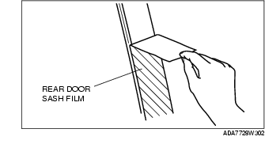

1. Partially peel back the glass run channel.
2. Warm up the rear door sash film using a hot air blower.
3. Peel off the rear sash film by pulling its end outward.

-
Note
-
• Be sure to remove the rear door sash film slowly, because it can easily tear.